だから用意が遅くなる [梅吉]
キッチンの入り口でおかーさん待ち構える梅吉さん。

![[猫]](https://blog.ss-blog.jp/_images_e/101.gif) ごはんのじかんやで
ごはんのじかんやで

おかーさんの足に全力アピール！！

さっ こっちでちゃっちゃと よういしてや
と誘導されます。
ごはんの用意が出来るまでの約4分を４倍速にしてみました。
（32秒 音は出ません＾＾ ちょっとめまぐるしいかもw）
ご飯の用意、ご飯後に飲む白湯やお薬も用意しなければならないので
（梅吉はお薬が必要な子です）
皆さんのお家の子のご飯の用意よりも時間がかかっているかも。
それに！梅吉が動画に写ってない時は
キッチンカウンターの上で私の目の前を行ったり来たり・・・・・
私の顔の方にお尻を向けたまま立ち止るので手元が見えなくて全然用意が捗りませんw
時間の半分くらいは梅吉のおちりを「見せられてる」かも(｡-_-｡)
「よ〜け〜て〜よぉ」
「おちりしか見えませんよー♡」
と言っている時間は楽しくもありますが
大人しく座って待っててくれたらちゃっちゃと用意できるのに、とも思うのでありますw
＊＊＊＊＊＊＊＊＊＊＊＊＊＊＊＊＊＊＊＊＊＊＊＊＊＊＊＊＊＊＊＊＊＊＊＊＊＊＊＊＊＊＊

今年もこの季節がやってきました。
我が家の近くの大きな神社は大相撲大阪場所中立浪部屋の宿舎になっているのです。

朝稽古が終わった後の土俵。

いつも浴衣のお相撲さん＾＾
びん付け油の香りと沈丁花の香りが漂ってくると「ああ、春だ」と思います。
で、毎年行っている大阪場所なんですが今年は希望日のチケットが取れませんでした。
（チケットが売り出されたのは新型肺炎が大きな騒ぎになる前。）
残念ですけど今年に限っては取れなくてよかったかなぁとちょっとホッとしています。
たくさんの人が集まる密閉空間・・・感染の不安がよぎって心から楽しめないかも。
昨日のニュースでは無観客興行、場所中止の可能性もなんてニュースになっていました。
どうなるんでしょう。

もう一つホッとしたこと。
今月末サントリー山崎蒸溜所の有料ツアーに当選していたのですが
（人気でなかなか当選できないのです）
しばらくの間工場見学自体を中止しますと連絡がありました。
山崎蒸溜所があるのは京都。
工場の中は大丈夫だろうけれど彼の地に向かうまでの交通機関に色々懸念が・・・
行こうか？行くまいか？？
行って大丈夫なのか？？？参加する人ってどんな人たちー！？！？など
モヤモヤと考える日々が続いていたので
きっぱりと中止を言い渡されてありがたいなと思ったくらいです。
この先も色々なイベントが中止されそうですね。
昨日大阪で直前になって中止が発表されたコンサートがありましたけど
中止の決定は出来るだけ早めにしてほしいものです。
その点サントリーは、エライ！
 ↑ガブッと一押し↑
↑ガブッと一押し↑
おかーさんの足に全力アピール！！
と誘導されます。
ごはんの用意が出来るまでの約4分を４倍速にしてみました。
（32秒 音は出ません＾＾ ちょっとめまぐるしいかもw）
ご飯の用意、ご飯後に飲む白湯やお薬も用意しなければならないので
（梅吉はお薬が必要な子です）
皆さんのお家の子のご飯の用意よりも時間がかかっているかも。
それに！梅吉が動画に写ってない時は
キッチンカウンターの上で私の目の前を行ったり来たり・・・・・
私の顔の方にお尻を向けたまま立ち止るので手元が見えなくて全然用意が捗りませんw
時間の半分くらいは梅吉のおちりを「見せられてる」かも(｡-_-｡)
「よ〜け〜て〜よぉ」
「おちりしか見えませんよー♡」
と言っている時間は楽しくもありますが
大人しく座って待っててくれたらちゃっちゃと用意できるのに、とも思うのでありますw
＊＊＊＊＊＊＊＊＊＊＊＊＊＊＊＊＊＊＊＊＊＊＊＊＊＊＊＊＊＊＊＊＊＊＊＊＊＊＊＊＊＊＊
今年もこの季節がやってきました。
我が家の近くの大きな神社は大相撲大阪場所中立浪部屋の宿舎になっているのです。
朝稽古が終わった後の土俵。
いつも浴衣のお相撲さん＾＾
びん付け油の香りと沈丁花の香りが漂ってくると「ああ、春だ」と思います。
で、毎年行っている大阪場所なんですが今年は希望日のチケットが取れませんでした。
（チケットが売り出されたのは新型肺炎が大きな騒ぎになる前。）
残念ですけど今年に限っては取れなくてよかったかなぁとちょっとホッとしています。
たくさんの人が集まる密閉空間・・・感染の不安がよぎって心から楽しめないかも。
昨日のニュースでは無観客興行、場所中止の可能性もなんてニュースになっていました。
どうなるんでしょう。
もう一つホッとしたこと。
今月末サントリー山崎蒸溜所の有料ツアーに当選していたのですが
（人気でなかなか当選できないのです）
しばらくの間工場見学自体を中止しますと連絡がありました。
山崎蒸溜所があるのは京都。
工場の中は大丈夫だろうけれど彼の地に向かうまでの交通機関に色々懸念が・・・
行こうか？行くまいか？？
行って大丈夫なのか？？？参加する人ってどんな人たちー！？！？など
モヤモヤと考える日々が続いていたので
きっぱりと中止を言い渡されてありがたいなと思ったくらいです。
この先も色々なイベントが中止されそうですね。
昨日大阪で直前になって中止が発表されたコンサートがありましたけど
中止の決定は出来るだけ早めにしてほしいものです。
その点サントリーは、エライ！
そのきもち わかるで！な梅吉 [梅吉]
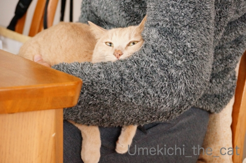
あんまり居心地よさそうに見えないのにおっとのお膝が好きな梅吉。
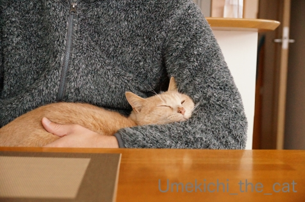
おっとがじっとしていると良いのですが

席を立とうとしたりなでなでし始めると変なスイッチが入ります(⌒-⌒;
（15秒 音出ません）
その始まりはこんな感じー！
もちろんジャレてるだけですwww
（10秒 音出ません）
おひざべっどは うごいたらあかん！とお怒りになる猫、に共感する猫、
をじっと見る猫w
今日は手抜き記事ゆえ押し逃げ推奨です(≧▽≦)
コメントお気遣いなくー。
三連休最後の日（お仕事の方はお疲れ様ですm(_ _)m）。
みなさまもごゆるりとお過ごしくださいませ。
↑ガブッと一押し↑
あんまり居心地よさそうに見えないのにおっとのお膝が好きな梅吉。
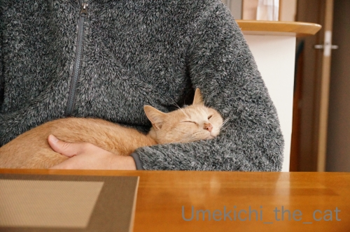
おっとがじっとしていると良いのですが
席を立とうとしたりなでなでし始めると変なスイッチが入ります(⌒-⌒;
（15秒 音出ません）
その始まりはこんな感じー！
もちろんジャレてるだけですwww
（10秒 音出ません）
おひざべっどは うごいたらあかん！とお怒りになる猫、に共感する猫、
をじっと見る猫w
今日は手抜き記事ゆえ押し逃げ推奨です(≧▽≦)
コメントお気遣いなくー。
三連休最後の日（お仕事の方はお疲れ様ですm(_ _)m）。
みなさまもごゆるりとお過ごしくださいませ。
今日は、花 華 [梅吉]
梅吉＆梅の木写真。
再度モデルをお願いしてみました。

まずはニオイを確認。
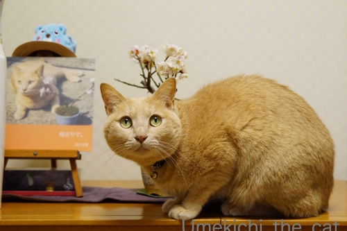
目線が良いですねー(≧▽≦)
でももうちょっとポーズにキメが欲しいかな！

PC前の皆さんに向かってウィンク(^_－)☆

ぺろりんっ＾＾

ベストなポーズ、決まったぁ(๑˃̵ᴗ˂̵)و

華のある花、胡蝶蘭ともパチリ。
おっとが役員室フロアの廊下で廃棄寸前だったのをレスキューして来ましたw
終わりかけだったのでお花は切り花として
根の方は植え直して育ててみることにしました。
蘭系は難しいんですよね。
むかーし実家で同じことをしていたのですが
翌年花は咲いたのですが一輪だけだったというwww
我が家の場合どうなることやら、です。
↑ガブッと一押し↑
再度モデルをお願いしてみました。
まずはニオイを確認。
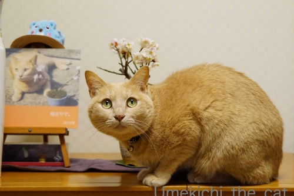
目線が良いですねー(≧▽≦)
でももうちょっとポーズにキメが欲しいかな！
PC前の皆さんに向かってウィンク(^_－)☆
ぺろりんっ＾＾
ベストなポーズ、決まったぁ(๑˃̵ᴗ˂̵)و
華のある花、胡蝶蘭ともパチリ。
おっとが役員室フロアの廊下で廃棄寸前だったのをレスキューして来ましたw
終わりかけだったのでお花は切り花として
根の方は植え直して育ててみることにしました。
蘭系は難しいんですよね。
むかーし実家で同じことをしていたのですが
翌年花は咲いたのですが一輪だけだったというwww
我が家の場合どうなることやら、です。
横着に爪を研ぐ [梅吉]

ブランケットに包まれて寝ている様に思えても
覗くと８割くらいの確率で目を開いてますw
にゃんこは眠らずに横になっているだけの時間が意外に長いかな、と感じます＾＾

ぬくぬくの宇宙船梅吉号から横着に手を伸ばしての爪とぎ！！
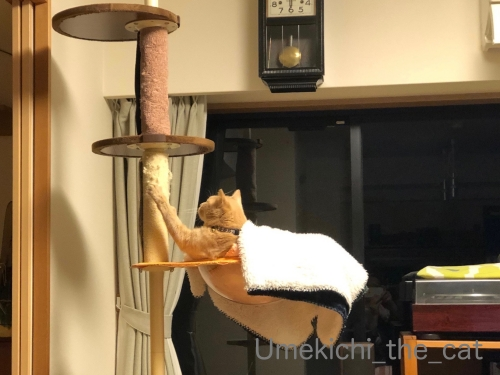
お、勢いがついてきた。
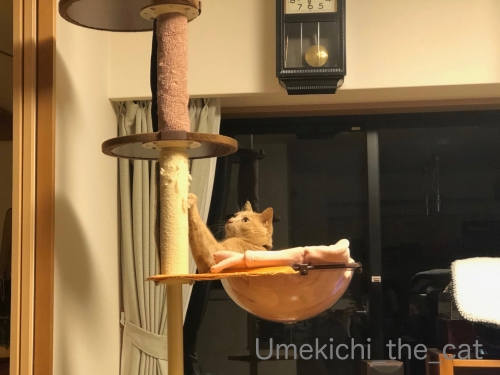
ここらでブランケットを振り落とす (≧▽≦)

100均のカーペットを切って貼り付けただけの爪とぎ。
これも例によって最初は見向きもしなかったんですが
最近寝たまま使えることに気づいた様です(*>艸<)
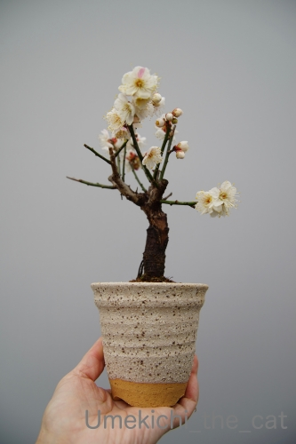
先日梅吉と一緒に登場した梅の「日月」。
ちゃんと鉢に植え替えました＾＾
お花はここまで咲き進みましたがやっぱり赤花が咲かないw
来年に期待します。。。
本当は梅吉＆梅の木写真にしたかったんですがモデルさんが非協力的で(⌒-⌒;
写真はおっとの盆活（盆栽活動）インスタから借りました(｡-_-｡)

ChatBleuさんおすすめの「雪苺娘 」を初めて食べました！
うん！！これは好みです。気に入りましたー＾＾
でも、すごーく包みかたが雑で（求肥でホイップクリームその他を包んであります）
家でパッケージを開けた段階で崩壊寸前 (＠◇＠)
食べようと掴んだところで完全崩壊となりました（涙
上手く食べるコツってあるのかしら・・・
＊＊＊＊＊＊＊＊＊＊＊＊＊＊＊＊＊＊＊＊＊＊＊＊＊＊＊＊＊＊＊＊＊＊＊
前記事の「採血でひどい目にあった」にたくさんのコメントありがとうございました。
みなさん辛い経験をされているんですね・・・(꒦ິ⌑꒦ີ)
「血管が見つかりにくい」「何度も刺された」「採決箇所をビシバシ叩かれた」その上
失敗して内出血したなんて方も多数。
大変お気の毒なことに「針が血管を通り越して骨に当たった」とか
「血の噴水を浴びた」なんて体験も！！怖いよー。
採血、うまい看護師さんに当たるをの願うしかありませんね(ｰ ｰ;)
梅の季節に梅吉が舞う [梅吉]
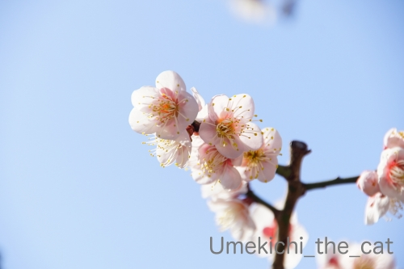
梅が見頃を迎えてますね＾＾
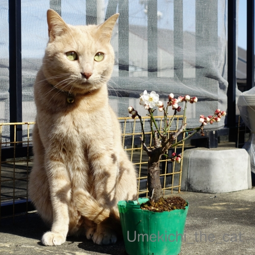
我が家の梅さんと梅の木。
梅の木はまだちゃんとした鉢に植え替えていないのが
なんともお恥ずかしい (｡-_-｡)
最近手に入れたこの梅の木、「日月（じつげつ）」という品種で
一つの枝に紅・白の花が咲くと言う。
今の所咲いているのは白のみ。
つぼみを見ても赤っぽいのは見当たらない・・・・・
ネットで色々見てみると「色の比率は運次第」みたいですw
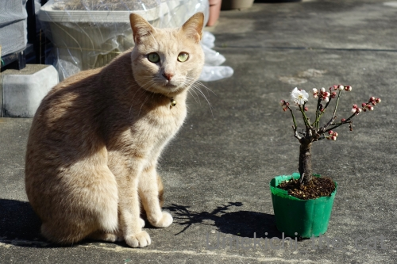
赤いお花も咲くと良いね、梅吉さん＾＾
この日は風もなくぽかぽか陽気でした。
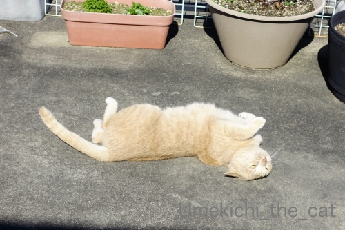
お日様を浴びて梅吉数ヶ月ぶりの喜びの舞！

お外でくりんくるんは最高だねー！

国芳猫顔もご披露ですw

寒い間はどんなに誘ってもベランダに出ようとしなかったのに。
ニャンコも春を感じている様ですよ＾＾

もう数年来通っているのに今まで気づかなかった
住吉大社の「猫の手しゃもじ」
これ一つで「人まねき・お金まねき」の両ご利益があるようです。
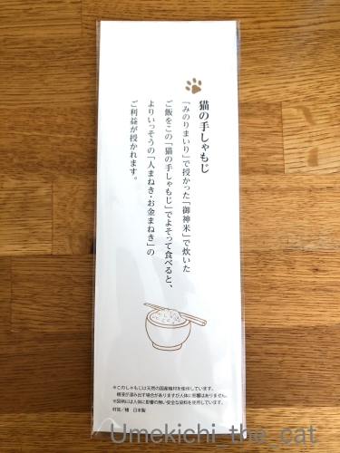
これでご飯をよそうとさらに運気アップ！？
日本製なので使っても全然問題無さそうですが
ご飯が激しくくっつきそうなのでためらってます(⌒-⌒;
＊＊＊＊＊＊＊＊＊＊＊＊＊＊＊＊＊＊＊＊＊＊＊＊＊＊＊＊＊＊＊＊＊
先日、年に一度の健康診断でした。
大嫌いな胃のバリウム検査は昨年10月に胃カメラ検査をしているのでパス。
あと「痛い」検査はマンモグラフィー検査くらい。
（女性は皆さんあの痛さをご存知かと。
男性はどんだけ痛いかパートナーに聞いてみてくださいねー( ´艸｀)
でもマンモグラフィーは短時間だし検査後の不快感はなしなので
今年の検診は楽勝だと思っていたのにーーーーー！！！！！
採血でとんだ目にあいました。
採血してくれたのは同年代と思われるおばちゃん。
さしてから「あら、血管に刺さらないわ！」と針でグリグリと血管を探る( ；∀；)
こういう時私は正直に痛いと言えない方なんですが
流石に「痛いです！」と訴えましたよ。。。
じゃあ一度針を抜きますねってことになったのですが
針を抜く途中で血管に行き当たったらしく「あら、血が採れそうよ」と
再度ぐいっと針を押されて採血続行(ｰ ｰ;)
針を刺されるのは割と平気な方だし（痛いけどね）
採血管に血がびょーっと出てくるのを「血液サラサラかしら？」と
じっと見ているくらい採血は平気な人なのに。
針を刺されたところ、内出血はしてないですけど
３日経っても触るとまだ痛い(꒦ິ⌑꒦ີ)
この一件で採血嫌いになっちゃいそうです。
体重、身長、お腹周り（笑）は昨年とほぼ変わらずで褒められましたよ(´▽｀)
身長が縮んでなくて良かったw
↑ガブッと一押し↑
梅が見頃を迎えてますね＾＾
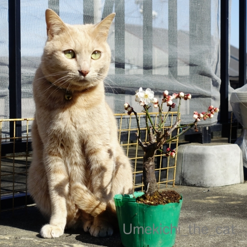
我が家の梅さんと梅の木。
梅の木はまだちゃんとした鉢に植え替えていないのが
なんともお恥ずかしい (｡-_-｡)
最近手に入れたこの梅の木、「日月（じつげつ）」という品種で
一つの枝に紅・白の花が咲くと言う。
今の所咲いているのは白のみ。
つぼみを見ても赤っぽいのは見当たらない・・・・・
ネットで色々見てみると「色の比率は運次第」みたいですw
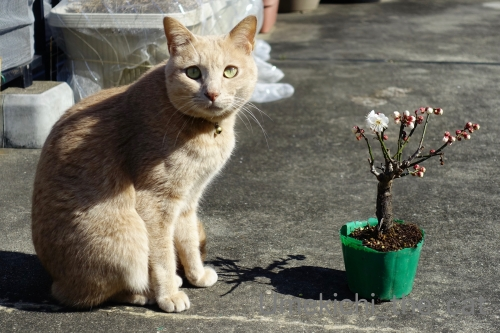
赤いお花も咲くと良いね、梅吉さん＾＾
この日は風もなくぽかぽか陽気でした。
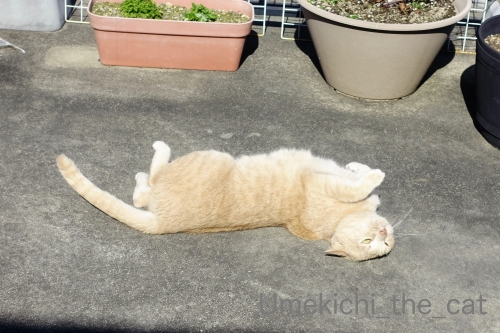
お日様を浴びて梅吉数ヶ月ぶりの喜びの舞！
お外でくりんくるんは最高だねー！
国芳猫顔もご披露ですw
寒い間はどんなに誘ってもベランダに出ようとしなかったのに。
ニャンコも春を感じている様ですよ＾＾
もう数年来通っているのに今まで気づかなかった
住吉大社の「猫の手しゃもじ」
これ一つで「人まねき・お金まねき」の両ご利益があるようです。
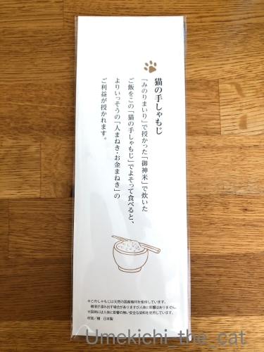
これでご飯をよそうとさらに運気アップ！？
日本製なので使っても全然問題無さそうですが
ご飯が激しくくっつきそうなのでためらってます(⌒-⌒;
＊＊＊＊＊＊＊＊＊＊＊＊＊＊＊＊＊＊＊＊＊＊＊＊＊＊＊＊＊＊＊＊＊
先日、年に一度の健康診断でした。
大嫌いな胃のバリウム検査は昨年10月に胃カメラ検査をしているのでパス。
あと「痛い」検査はマンモグラフィー検査くらい。
（女性は皆さんあの痛さをご存知かと。
男性はどんだけ痛いかパートナーに聞いてみてくださいねー( ´艸｀)
でもマンモグラフィーは短時間だし検査後の不快感はなしなので
今年の検診は楽勝だと思っていたのにーーーーー！！！！！
採血でとんだ目にあいました。
採血してくれたのは同年代と思われるおばちゃん。
さしてから「あら、血管に刺さらないわ！」と針でグリグリと血管を探る( ；∀；)
こういう時私は正直に痛いと言えない方なんですが
流石に「痛いです！」と訴えましたよ。。。
じゃあ一度針を抜きますねってことになったのですが
針を抜く途中で血管に行き当たったらしく「あら、血が採れそうよ」と
再度ぐいっと針を押されて採血続行(ｰ ｰ;)
針を刺されるのは割と平気な方だし（痛いけどね）
採血管に血がびょーっと出てくるのを「血液サラサラかしら？」と
じっと見ているくらい採血は平気な人なのに。
針を刺されたところ、内出血はしてないですけど
３日経っても触るとまだ痛い(꒦ິ⌑꒦ີ)
この一件で採血嫌いになっちゃいそうです。
体重、身長、お腹周り（笑）は昨年とほぼ変わらずで褒められましたよ(´▽｀)
身長が縮んでなくて良かったw
クリアボールは宇宙船！？ [梅吉]

クリアボールにも抵抗なく入る様になった梅吉さん。

おかーさんとは鼻チュー♡

おとーさんとはバトるw
ただし、ブランケットなしでも入るのは遊ぶ時のみ。
眠くなった時にブランケッドがないと
わーわー文句鳴きされます(⌒-⌒;
（35秒 音無です。後半にgifが付いてます＾＾）
遊び道具として？クリアボールを楽しむ梅吉。
この丸さが宇宙船のカプセルの様に見えて・・・・・

こんなことしてみましたw
ぞぞのおっちゃんより さきに うちゅうにいったで わし by 梅吉

「とろけるようにスヤスヤ眠れる猫を一頭でも増やす」ために
保護猫の飼い主募集活動を支援する #とろねこチャレンジ をご存知でしょうか。
#とろねこチャレンジ をつけてTwitterかInstagramに投稿すると
一投稿あたり10円が株式会社花王から
動物の保護活動をするNPO法人ランコントレ・ミグノンに寄付されます。
花王のとろねこチャレンジの詳細ページはこちら
NPO法人ランコントレ・ミグノンのHPはこちら
応募期間は2020年2月7日～4月30日までです。
梅吉も早速参加しましたよ＾＾
まつげとおひげと節分と [梅吉]

こてつくんのまつげは黒い、と知って軽く驚く。
そうですよねー。被毛の色によってまつげの色もそれぞれ。
梅吉のまつげは白っぽいです。
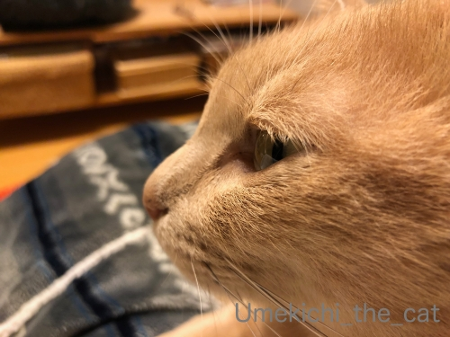
もう少し寄ってみよう。
白っぽくで結構長め、下向きに生えてます。村山富市さん、みたいじゃないですか？
（若い人にはわからんだろうな・・・・）
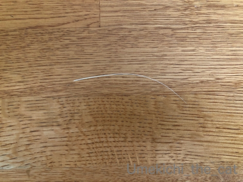
ここ１週間で立て続けに抜けたおひげを五本ほど発見しました。
家猫は一年中換毛期だと思いますがそろそろ更なる激しい換毛期がやってきているのでしょうか。
毛も抜けるんだからおひげも抜ける？
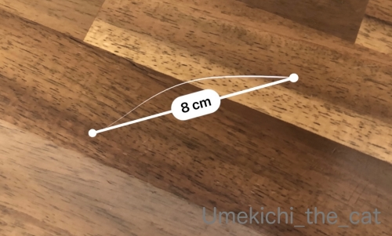
iPhoneの「計測」アプリで測ってみたら８センチ。
計測があまり正確ではない情報も耳にしたので定規で測ってみる。８センチでした。
ほかの抜けおひげも測ってみましたがやっぱり８センチ。
梅吉のおひげは「８センチで抜ける」周期？
（18秒 音は出ません）
我が家のおしゃれ番長w
鼻シワを寄せながら毛づくろいに精を出してました( ´艸｀)
やんちゃ線もくっきりだな・・・
説得に応じない [梅吉]
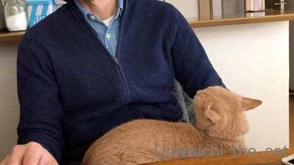
おとーさんのお膝の上でご機嫌よくしてたと思ったら・・・・・
梅吉さんの様子が怪しくなってきましたよ。
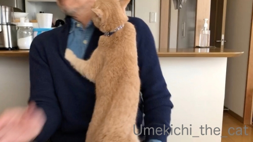
なんじゃ〜っ！！
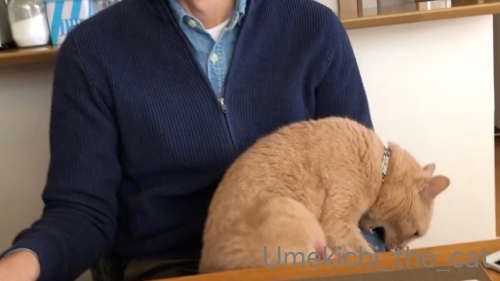
あごガブを阻止されたので腹いせに手をガブw

どーして急にそうなるんですか？おとーさん何もしてないでしょ？？
との説得も虚しく・・・・・
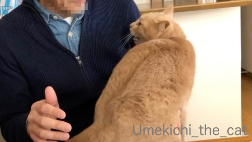
さらにやる気満々のねこ。
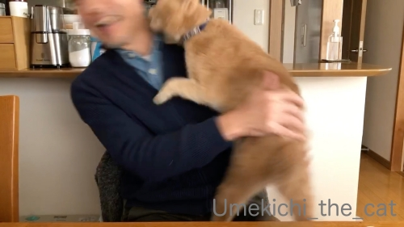
ブレブレ写真でモザイクかけなくても使えました（爆
なかなか臨場感にあふれているのではないか、と自己満足です。
おっとがすごく嬉しそうなのが笑えます(*>艸<)
梅吉がちゃんと急所、頸動脈あたりを狙っているのもすごいw
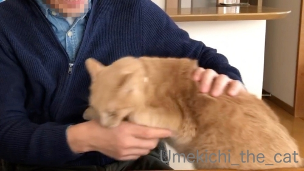
再度腹いせのガブ(⌒-⌒;

気が済んだのかさっさと立ち去ろうとする梅吉を引き留めようとするも
やっぱり聞き入れてもらえませんでした(*>艸<)
いったい二人の間に何があったんでしょ。
いつも愉快なお二人ですw
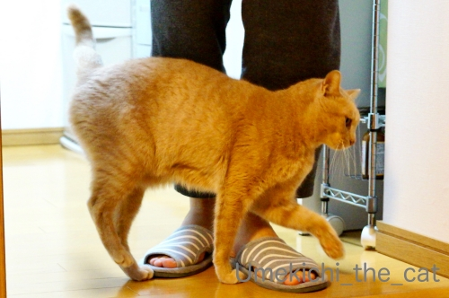
その数十分後、お風呂上がりのおとーさんに
全力でおやつをおねだりする変わり身の早いねこwwwww
↑ガブッと一押し↑
おとーさんのお膝の上でご機嫌よくしてたと思ったら・・・・・
梅吉さんの様子が怪しくなってきましたよ。
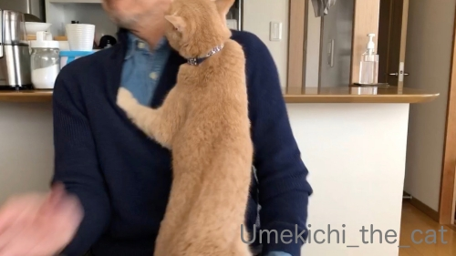
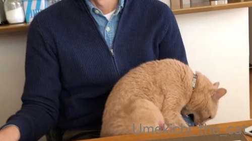
あごガブを阻止されたので腹いせに手をガブw
どーして急にそうなるんですか？おとーさん何もしてないでしょ？？
との説得も虚しく・・・・・
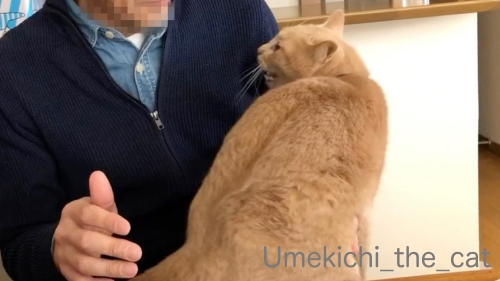
さらにやる気満々のねこ。
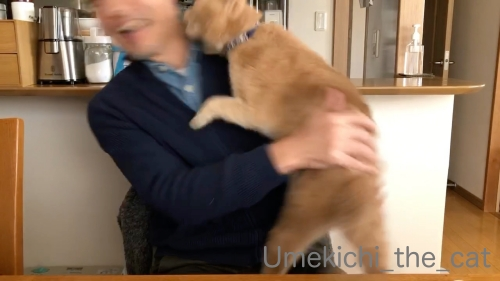
ブレブレ写真でモザイクかけなくても使えました（爆
なかなか臨場感にあふれているのではないか、と自己満足です。
おっとがすごく嬉しそうなのが笑えます(*>艸<)
梅吉がちゃんと急所、頸動脈あたりを狙っているのもすごいw
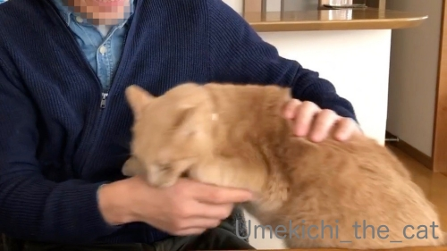
再度腹いせのガブ(⌒-⌒;
気が済んだのかさっさと立ち去ろうとする梅吉を引き留めようとするも
やっぱり聞き入れてもらえませんでした(*>艸<)
いったい二人の間に何があったんでしょ。
いつも愉快なお二人ですw
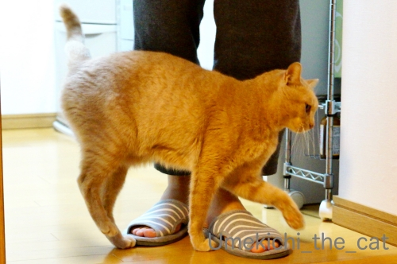
その数十分後、お風呂上がりのおとーさんに
全力でおやつをおねだりする変わり身の早いねこwwwww

カフェオレ色の梅吉

梅吉 2023年8月10日 永眠


梅吉と出会った譲渡会

犬猫の理由なき殺処分ゼロ
妄想広告
UMEKICHI 光

爆発的に早い！
時々攻撃的！
Thanks to Mr.Boss365
爆発的に早い！
時々攻撃的！
Thanks to Mr.Boss365